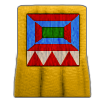

Civilizaciones
Bizantinos

Civilización defensiva.
Bonificación: Edificios +10% PR en Alta Edad Media, +20% PR en Edad Feudal, +30% PR en Edad Castillos, +40% PR en Edad Imperial.
Camellos, guerrilleros, piqueros y alabarderos cuestan -25%.
Brulotes +20% ataque.
Avanzar a la Edad Imperial cuesta -33%.
Guardia urbana gratis.
Unidad única: Catafracta (caballería que causa daños adicionales a la infantería).
Tecnologías únicas: Fuego griego (brulotes tienen +1 de alcance).
Logística (catafractas arrasan a su paso, dañan unidades contiguas al atacar).
Bonificación de equipo: Monjes curan +50% más rápido.
Celtas

Civilización de armas de asedio e infantería.
Bonificación: Infantería se mueve 15% más rápido.
Leñadores trabajan 15% más rápido.
Armas de asedio disparan 20% más rápido.
Ovejas no se convierten si están en la línea de visión (LDV) de una unidad celta.
Unidad única: Invasor de pastos (infantería excepcionalmente rápida que causa daños adicionales a edificios).
Tecnologías únicas: Bastión (castillos y torres disparan 20% más rápido).
Furor celta (unidades de taller maq. asedio tienen +40% PR).
Bonificación de equipo: Taller maq. asedio trabaja 20% más rápido.
Chinos

Civilización de arqueros.
Bonificación: Comienzan con 3 aldeanos más, pero -50 madera y -150 alimento.
Tecnologías cuestan -10% Edad Feudal, -15% Edad Castillos, -20% Edad Imperial.
Centros urbanos tienen +5 LDV, admiten 10 unidades de población.
Buques de demolición +50% PR.
Unidad única: Chu-ko-nu (arquero a pie que dispara muchas flechas a gran velocidad).
Tecnologías únicas: Gran Muralla (Muros y torres tienen +30% PR).
Cohetería (Chu-ko-nu tiene +2 de ataque, escorpiones tienen +4 de ataque).
Bonificación de equipo: Granjas tienen +45 de alimento.
Francos

Civilización de caballería.
Bonificación: Recivilizacion colectores de bayas trabajan 25% más rápido.
Castillos cuestan -25%.
Caballero +20% PR (antes jinetes).
Mejoras de granja gratis (requiere molino).
Unidad única: Lanzador de hachas (infantería con ataque a distancia que causa daños adicionales a edificios).
Tecnologías únicas: Código caballeresco (establos trabajan 40% más rápido).
Hacha de arista (lanzador de hachas tiene +1 de alcance).
Bonificación de equipo: Jinetes +2 LDV.
Godos

Civilización de infantería.
Bonificación: Infantería cuesta -35% desde la Edad Feudal
.Infantería ataca +1 contra edificios.
Aldeanos atacan +5 contra jabalíes; cazadores llevan +15 de carne.
+10 al límite de población en Edad Imperial.
Unidad única: Huscarle (infantería con armadura antiproyectil excepcional que causa daños adicionales a arqueros y edificios).
Tecnologías únicas: Anarquía (permite crear huscarles en cuarteles).
Movilización (cuarteles trabajan 100% más rápido).
Bonificación de equipo: Cuarteles trabajan +20% más rápido.
Ingleses

Civilización de arqueros a pie.
Bonificación: Centros urbanos cuestan -50% de madera desde la Edad de los Castillos.
Arqueros a pie (excepto guerrilleros) tienen +1 alcance en Edad de los Castillos, +1 en Edad Imperial (+2 total).
Pastores trabajan 25% más rápido.
Unidad única: Arquero de tiro largo (arquero a pie con extensa LDV y un alcance excepcional).
Tecnologías únicas: Voluntarios de caballería (arqueros a pie tienen +1 de alcance; torres tienen +2 de ataque).
Warwolf (lanzapiedras atacan con área de daños).
Bonificación de equipo: Galerías de tiro con arco trabajan 20% más rápido.
Japoneses

Civilización de infantería.
Bonificación: Pesqueros tienen doble PR; tienen 0/+2 de armadura; trabajan +5% más rápido en Alta Edad Media, +10% Edad Feudal, +15% Edad Castillos, +20% Edad Imperial.
Camp. madereros, camp. mineros y molinos cuestan -50%.
Infantería ataca 25% más rápido desde la Edad Feudal.
Unidad única: Samurai (infantería con un rápido ataque que causa daños adicionales a edificios y unidades únicas).
Tecnologías únicas: Yasama (torres disparan flechas adicionales).
Kataparuto (lanzapiedras disparan, se arman/desarman más rápido).
Bonificación de equipo: Galeras +50% LDV.
Mongoles
Civilización de arqueros a caballo.
Bonificación: Arqueros a caballo disparan 20% más rápido.
Caballería ligera, húsar +30% PR.
Cazadores trabajan 50% más rápido.
Unidad única: Mangudai (arquero a caballo que causa daños adicionales a armas de asedio).
Tecnologías únicas: Nómadas (si sus casas son destruidas, no pierden la capacidad de población que admitían).
Instrucción militar (unidades de taller maq. asedio se mueven 50% más rápido).
Bonificación de equipo: Caballería de exploración, caballería ligera, húsar +2 LDV.
Persas

Civilización de caballería.
Bonificación: Comienzan con +50 unidades de alimento y madera.
Centro urbano y muelle doble PR; trabajan +10% más rápido en Edad Feudal, +15% Edad de los Castillos, +20% Edad Imperial.
Unidad única: Elefante de guerra (caballería lenta, pero muy fuerte y poderosa que causa daños adicionales a edificios).
Tecnologías únicas: Barbacana (castillos causan daños adicionales a arietes).
Cornacas (elefantes de guerra se mueven 30% más rápido).
Bonificación de equipo: Jinetes atacan +2 contra arqueros.
Sarracenos

Civilización naval y de camellos.
Bonificación: Cuota de mercado cuesta sólo 5%.
Mercados cuestan -75 de madera.
Barcos de transporte tienen doble PR, doble capacidad.
Galeras atacan 20% más rápido.
Arqueros a caballo +3 ataque contra edificios.
Unidad única: Mameluco (camellería con ataque a distancia que causa daños adicionales a la caballería).
Tecnologías únicas: Madraza (si un monje muere, se devuelve el 33% de su costo).
Fanatismo (camellos y mamelucos tienen +30 PR).
Bonificación de equipo: Arqueros a pie atacan +1 contra edificios.
Teutones

Civilización de infantería.
Bonificación: Monjes curan desde 2 veces más lejos.
Centros urbanos guarecen +10 unidades, torres guarecen el doble de unidades.
Matacanes gratis.
Granjas cuestan -33%.
Unidad única: Caballero de la orden teutónica (infantería lenta, pero muy poderosa y con armadura cuerpo a cuerpo excepcional que causa daños adicionales a edificios).
Tecnologías únicas: Blindaje (armas de asedio tienen armadura cuerpo a cuerpo adicional).
Almenas (castillos tienen +3 de alcance, infantería guarecida dispara flechas).
Bonificación de equipo: Unidades son resistentes a la conversión.
Turcos
Civilización de pólvora.
Bonificación: Unidades de pólvora +25% PR; desarrollo de tecnologías con pólvora cuesta -50%; química gratis.
Mineros de oro trabajan 15% más rápido.
Mejoras de caballería ligera y húsar gratis.
Unidad única: Jenízaro (artillero manual, muy poderoso de cerca, poco preciso desde lejos).
Tecnologías únicas: Sipahi (arqueros a caballo tienen +20 PR).
Artillería (torres de bombardeo, cañones de asedio, galeones artillados tienen +2 de alcance).
Bonificación de equipo: Unidades de pólvora se crean 20% más rápido.
Vikingos
Civilización naval y de infantería.
Bonificación: Barcos de guerra cuestan -10% en Edad Feudal, -15% en Edad de los Castillos, -20% en Edad Imperial.
Infantería +10% PR en Edad Feudal, +15% PR en Edad de los Castillos, +20% PR en Edad Imperial.
Carretilla y carro de mano gratis.
Unidades únicas: Guerrero en trance (infantería que se regenera que causa daños adicionales a edificios).
Barco Dragón (barco de guerra veloz que dispara varias flechas).
Tecnologías únicas: Caudillos (guerreros en trance causan daños adicionales a la caballería).
Banda de guerreros en trance (guerreros en trance se regeneran más rápido).
Bonificación de equipo: Muelles cuestan -25%.
Aztecas
Civilización de infantería y monjes.
Bonificación: Comienzan con +50 de oro.
Aldeanos llevan +5 de recursos.
Unidades militares son creadas un 15% más rápido.
Monjes tienen +5 ptos. resist. (PR) por cada tecnología desarrollada del monasterio.
Unidad única: Guerrero jaguar (infantería que causa daños adicionales a la otra infantería).
Tecnologías únicas: Átlatl (guerrilleros tienen +1 de alcance, +1 de ataque).
Guerras florales (infantería tiene +4 de ataque).
Bonificación de equipo: Reliquias generan +33% de oro.
Coreanos
Civilización naval y de torres.
Bonificación:
Aldeanos +3 LDV.
Se construyen fortificaciones más rápido.
Canteros trabajan 20% más rápido.
Mejoras de torres gratis.
Torres (excepto torre bombardeo) tienen +1 de alcance en Edad de los Castillos, +2 en Edad Imperial.
Unidades únicas: Carreta de guerra (arquero a caballo; con eficaz armadura antiproyectil).
Barco Tortuga (barco de guerra lento y con eficaz armadura que destruye barcos a una corta distancia).
Tecnologías únicas: Panokseon (barcos tortuga se mueven 15% más rápido).
Shinkichon (catapultas tray. plana, onagros tienen +1 de alcance).
Españoles
Civilización de pólvora y monjes.
Bonificación: Constructores trabajan 30% más rápido.
Mejoras de herrería no cuestan oro.
Galeones artillados se benefician de la balística (más rapidez y puntería).
Artilleros manuales y cañones de asedio disparan 15% más rápido.
Unidades únicas: Conquistador (artillero manual de caballería; potente de cerca, poco preciso desde lejos).
Misionero (monje montado; más rápido que el normal, pero con menos LDV y alcance).
Tecnologías únicas: Inquisición (monjes convierten más rápido).
Supremacía (aldeanos tienen +40 PR, +6 de ataque, +2/+3 de armadura).
Hunos
Civilización de caballería.
Bonificación: No necesitan casas, pero comienzan con -100 unidades de madera.
Arqueros a caballo cuestan -10% en Edad de los Castillos, -20% en Edad Imperial (antes -15% y -30%).
Lanzapiedras con +30% de puntería.
Unidad única: Tarcano (caballería que causa daños adicionales a edificios).
Tecnologías únicas: Razias (permite crear tarcanos en establos).
Ateísmo (las victorias por reliquias y maravillas duran +100 años; espionaje y traición cuesta -50%).
Bonificación de equipo: Establos trabajan 20% más rápido.
Mayas

Civilización de arqueros.
Bonificación: Comienzan con +1 aldeano, pero con -50 unidades de alimento.
Recursos duran 15% más (antes 20%).
Arqueros cuestan -10% en Edad Feudal, -20% en Edad Castillos, -30% en Edad Imperial.
Unidad única: Arquero de plumas (arquero a pie rápido y fuerte, pero con menos ataque que otros arqueros).
Tecnologías únicas: Saeta de obsidiana (arqueros atacan +6 contra edificios) (antes +4).
El dorado (guerreros águila tienen +40 PR).
Bonificación de equipo: Muros cuestan -50%.
Eslavos
Civilización de infantería y armas de asedio.
Bonificación: Granjeros trabajan 15% más rápido.
Rastreo gratis.
Unidades de taller de máquina de asedio cuestan -15%.
Unidad única: Boyardo (caballería con eficaz armadura cuerpo a cuerpo).
Tecnologías únicas: Ortodoxia (monjes tienen +3/+3 de armadura).
Druzhina (infantería daña también a enemigos contiguos al atacar).
Bonificación de equipo: Cada edificio militar admite 5 unidades de población.
Incas
Civilización de infantería.
Bonificación: Comienzan la partida con una llama gratis.
Mejoras de infantería de la herrería afectan a los aldeanos.
Casas admiten 10 unidades de población.
Edificios cuestan -20% de piedra.
Unidades únicas: Kamayuk (infantería con una gran lanza de corto alcance que causa daños adicionales a la caballería).
Hondero (arquero que causa daños adicionales a la infantería).
Tecnologías únicas: Guaracas (guerrilleros y honderos no tienen alcance mínimo).
Postas (kamayuk, guerreros águila y honderos obtienen +1/+2 de armadura).
Bonificación de equipo: Granjas se construyen 50% más rápido.
Indios
Civilización de camellos y pólvora.
Bonificación: Aldeanos cuestan -10% en Alta Edad Media, -15% en la Edad Feudal, -20% en Edad de los Castillos, -25% en Edad Imperial (antes 30%).
Aldeanos pescan 15% más rápido y cargan +25 unidades de pescado.
Camellos tienen +1/+1 de armadura.
Unidades únicas: Elefante arquero (arquero montado; lento, pero muy fuerte y con buena armadura antiproyectil).
Camello imperial (mejora de camello; con más PR y ataque que el camello con armadura).
Tecnologías únicas: Sultanato (toda forma de acumulación de oro es 10% más rápida (minería, comercio, reliquias).
Shatagni (artilleros manuales tienen +1 de alcance).
Bonificación de equipo: Camellos causan daño adicional a edificios.
Italianos
Civilización naval y de arqueros.
Bonificación: Avanzar a la siguiente edad cuesta -15% (antes -10%).
Tecnologías del muelle cuestan -50%.
Pesqueros cuestan -25%.
Unidades de pólvora cuestan -25%.
Unidades únicas: ballestero genovés (arquero a pie con un ataque lento que causa daños adicionales a la caballería).
Condotiero (infantería que causa daños adicionales a las unidades de pólvora).
Tecnologías únicas: Escudo pavés (arqueros a pie obtienen +1/+1 de armadura) (antes solo genovés ballestero).
Ruta de la Seda (carretas de mercancías y urcas mercantes cuestan -50%).
Bonificación de equipo: Condotiero disponible en cuarteles.
Magiares
Civilización de caballería ligera.
Bonificación: Aldeanos eliminan a los lobos de un golpe.
Forja, fundición de hierro y alto horno gratis (requiere herrería).
Caballería de exploración, caballería ligera y húsares cuestan -10%.
Unidad única: Huszar magiar (caballería ligera que causa daños adicionales a armas de asedio).
Tecnologías únicas: Mercenarios (huszar magiar no cuesta oro).
Arco recurvo (arqueros a caballo tienen +1 de alcance).
Bonificación de equipo: Arqueros a pie tienen +2 LDV.
Bereberes

Civilización naval y de caballería.
Bonificación: Los aldeanos se mueven un 10% más rápido.
Unidades creadas en establos cuestan -15% en edad de los Castillos, -20% en edad Imperial.
Los barcos se mueven 10% más rápido.
Unidades únicas: Arquero a camello.
Genitor (guerrillero a caballo).
Tecnologías únicas: Alcazaba (los castillos trabajan un 25% más rápido en equipo).
Camellos magrebíes (los jinetes a camello se regeneran).
Bonificación de equipo: Genitor disponible en las galerías de tiro con arco.
Malíes
Civilización de infantería.
Bonificación: Los edificios cuestan un 15% menos de madera.
A partir de la Edad Feudal, la infantería cuenta con +1 en armadura.
Las investigaciones de minería aurífera y pozo minero auifero son gratis.
Unidad única: Gbeto (infantería a distancia).
Tecnologías únicas: Tigui (los centros urbanos disparan flechas incendiarias).
Imba (+3 ataque para la caballería).
Bonificación de equipo: La universidad investiga un 80% más rápido.
Etíopes
Civilización de arqueros.
Bonificación: Los arqueros disparan un 15% más rápido.
Reciben 100 de oro y alimento cada vez que avanzan de edad.
Las mejoras de piqueros y alabarderos son gratis.
Unidad única: Guerrero Shotel (infantería).
Tecnologías únicas: Centralización Royal Heirs (los guerreros Shotel se crean muy rápido).
Motores de torsión (las unidades de asedio aumentan su onda expansiva al atacar).
Bonificación de equipo: Torres y puestos avanzados obtienen +3 en LDV.
Portugueses
Civilización naval y de pólvora.
Bonificación: Todas las unidades cuestan un 15% menos de oro.
Los barcos son un 10% más resistentes.
Pueden construir factorías en la Edad Imperial (única civilización que tiene un edificio único).
Unidades únicas: Cañón de órgano (unidad de asedio).
Carabela (barco de guerra).
Tecnologías únicas: Carraca (barcos obtienen +1/+1).
Arcabuz (unidades de pólvora mejoradas por balística).
Bonificación de equipo: Cartografía gratis desde la Alta Edad Media.
Birmanos
Civilización de monjes y elefantes.
Bonificación: Las mejoras del campamento maderero son gratuitas.
La infantería obtiene +1 de ataque por edad.
Las mejoras de los monasterios son un 50% más baratas.
Unidad única: Arambai (caballería a distancia).
Tecnologías únicas: Howdah (los elefantes de combate obtienen +1/+2 en armadura).
Caballería de Manipur (la caballería y los Arambai obtienen +6 de ataque contra edificios).
Bonificación de equipo: Las reliquias son visibles en el mapa.
Jemeres
Civilización de armas de asedio y elefantes.
Bonificación: No son necesarios los edificios para avanzar de edad e incluso para desbloquear otros edificios.
Los elefantes de combate son un 15% más rápidos.
Los aldeanos pueden guarecerse en las casas.
Unidad única: Elefante con balista (caballería de asedio).
Tecnologías únicas: Colmillos de acero (los elefantes de combate tienen +3 de ataque).
Doble ballesta (los elefantes con balista y los escorpiones disparan dos proyectiles).
Bonificación de equipo: Los escorpiones tienen +1 de alcance.
Malayos
Civilización naval.
Bonificación: Avanzan de edad un 100% más rápido.
Los pesqueros y las trampas para peces son un 33% más baratas.
Las trampas para peces proporcionan alimento infinito.
Los elefantes de combate son un 20% más baratos.
Unidad única: Guerrero Karambit (infantería).
Tecnologías únicas: Talasocracia (los muelles mejoran a puertos, que disparan flechas).
Imposición forzada (los milicias y sus mejoras no cuestan oro).
Bonificación de equipo: Los muelles y puertos dan +100% de línea de visión.
Vietnamitas
Civilización de arqueros.
Bonificación: Revela las posiciones de los enemigos desde el comienzo.
Los arqueros aumentan sus puntos de salud en cada edad (10% en Feudal, 15% en Castillos y 20% en Imperial).
Leva gratis.
Unidad única: Arquero de Ratan (arquero con resistencia a los proyectiles de otros arqueros).
Guerrillero imperial
Tecnologías únicas: Chatras (los elefantes de combate obtienen +50 de salud).
Papel moneda (tributa 500 de oro a cada aliado).
Bonificación de equipo: Acceso al guerrillero imperial (unidad única) en las galerías de tiro con arco.